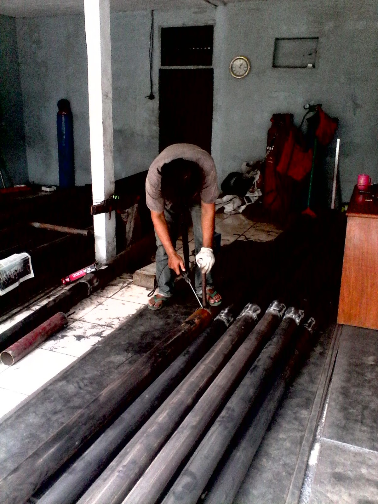

Jual Genteng Metal di Palangkaraya ☎ 0822 4582 0777 (Rinanti)
Atap adalah hal yang paling penting saat membangun sebuah bangunan. Tergantung setiap kebutuhannya, bagi bangunan yang megah mungkin beton akan menjadi pilihan. Disini, galvalum mempunyai peran penting sebagai atap sebuah bangunan. Selain atap, galvalum juga berperan sebagai kerangka atap yang gunanya adalah untuk menopang beratnya atap. Tidak tertarik dengan galvalum? Maka masih tersedia genteng metal yang akan saya bahas di pertemuan kita kali ini. Ada pula atap galvalum dengan bentuk unik seperti atap lengkung, gelombang dan lain sebagainya.
Distributor & Supplier Genteng Metal

Genteng metal adalah salah satu jenis genteng yang berbahan dasar Zincalume, bahan ini merupakan salah satu jenis bahan yang digunakan pada baja ringan. Genteng metal adalah genteng yang terbuat dari campuran dari bahan bahan yang terbuat dari logam, seperti zinc, baja ringan dan galvanis. Memang saran terbaik ketika anda ingin menggunakan atap dari genteng metal Palangkaraya adalah gunakan jenis genteng metal Palangkaraya pasir terbaik. Genteng metal pasir adalah genteng yang memiliki bobot yang ringan tetapi memilki kekuatan yang tinggi sehingga genteng metal Palangkaraya pasir adalah genteng yang memilki kualitas yang terbaik dibandingkan dengan genteng metal Palangkaraya lainnya. Apakah mitos itu benar? Faktanya beberapa jenis genteng metal Palangkaraya memang menyebabkan rumah terasa lebih panas dan berisik ketika hujan, namun kabar baiknya bila anda memilih menggunakan genteng metal Palangkaraya pasir terbaik anda dipastikan akan terhindar dari dua hal tersebut. Jika anda masih agu lagi, kami sarankan untuk anda untuk mengubungi kami secara langsung.
kami berusaha mencari kepuasan pelanggan kami. Bila belum percaya, maka anda dapat mengujungi situs official kami di dis.or.id untuk mendapatkan info yang lebih lanjut dan dapatkan penawaran terbaik dari kami khusus untuk anda.
Info Pemesanan Selengkapnya
Google Maps: https://www.google.com/maps/d/u/0/viewer?mid=18K_Vf8GKnjN9AtE2jUMATDSYvScojDst&ll=-7.269373870070218%2C112.655575&z=16
Note: https://www.facebook.com/notes/distributor-of-industrial-supply/pabrik-supplier-genteng-metal/1783191985314014/
Event: https://www.facebook.com/events/1480458558737554/
Portfolio Produk: https://www.facebook.com/pg/DistributorOfIndustrialSupplyDIS/photos/?tab=album&album_id=1683750531924827
Distributor & Supplier Besi Beton

Apa Cepetan merupakan besi yang dapat diaplikasikan pada suatu gedung karena bahan ini lebih mudah didapat dan juga harganya pun lebih ekonomis dibandingkan dengan penggunaan material lainnya. Anda bisa mendapatkan jenis beton berkualitas dengan membeli di berbagai tempat namun tak semua tempat memberikan kualitas besi yang terbaik. Dan besi beton polos memiliki penampakan benda dengan permukaan licin atau tidak bersirip.
Besi beton polos sangat jarang digunakan kecuali digunakan sebagai kolom.
Segera kunjungi dis.or.id untuk mendapatkan besi beton yang anda inginkan. Kualitas dan mutunya pun telah terjamin. Jadi, anda tidak perlu ragu lagi.
Distributor & Supplier Steel Grating

Steel Grating kini dikenal sebagai salah satu produk yang bermanfaat untuk proses pembangunan. Salah satunya dengan menggunakan grating dalam kombinasi pembangunan. Untuk permukaan atas bagian kiri didesain bergerigi agar tidak membahayakan Anda. Grating ini disusun dari baja berkalit dan dilas di bagian permukaan silangnya. Karena harga murah tidak menjamin adanya kualitas yang terbaik. Bahan dasar yang digunakan untuk membuat Grating ini cukup berkualitas dan tidak diragukan lagi keamanannya.
Kini anda bisa mendapatkan steel dengan mengunjungi dis.or.id. Terdapat beberapa ukuran yang bisa anda pesan sesuai dengan kebutuhan pembangunan anda.
Distributor & Supplier Pipa (Hitam/Gas, Galvanis)

Manfaat dari pipa hitam galvanis memang banyak sekali untuk kebutuhan konstruksi bangunan. Karena kekuatan yang dimiliki olehnya, tak heran bila pipa hitam banyak digunakan pada kebutuhan konstruksi. Kebanyakan orang memanfaatkan pipa hitam ini pada area pertambangan gas dan minyak, sebagian orang pun bahkan mengira bahwa nama asli dari pipa hitam memanglah pipa gas. Untuk itu, anda bisa aplikasikan pipa hitam di segala wilayah indonesia karena ia tahan korosi cuaca. Tentukan kebutuhan pipa hitam anda pada kami, tersedia ukuran ½ inc sampai 40 inc.
Distributor & Supplier Kawat Bronjong/Gabion

Kawat bronjong kini dapat sering ditemui untuk berbagai kebutuhan pembanguna. Ini seperti halnya kawat lainnya. Inilah mengapa kawat ini tidak akan berkarat meskipun terkena air hujan. Kawat ini sangat bisa diandalkan sebagai pencegah erosi. Kawat ini berfungsi agar tidak terjadi gerusan akibat arus air yang mengakibatkan tiang penyangga rusak di mana hal ini bisa berakhir dengan rubuhnya jembatan.
Disana anda bisa mendapatka kawat dengan harga yang cukup terjangkau dengan kualitas terbaik yang dimilikinya. Karena disana anda akan mendapatkan penawaran mengenai kawat bronjong denga berbagai ukuran.
Distributor & Supplier WF H-beam

Terlebih saat ini zaman sudah serta praktis dan mudah. Kekuatan yang dimiliki oleh besi ini memang terbukti kuat dan sangat tinggi. Untuk membuat bangunan seperti rumah, pagar, industri, jalan raya, pabrik, dan lain-lain Anda bisa memakai jenis besi ini.
Jika membawanya Anda juga tidak perlu khawatir keberatan karena besi ini lebih ringan dan praktis.
Kini anda bisa mendapatkan besi WF dengan kualitas terbaik dan mutu terjamin. Disana anda bisa mendapatkan besi tersebut dengan kualitas terbaik serta harga yang sangat terjangkau. Pastinya dengan harga yang sangat terjangkau.
Distributor & Supplier Expanded Metal
.JPG)
Expanded metal atau yang biasa dikenal dengan sebutan X.P.M. ini merupakan salah satu produk hasil dari kemajuan teknologi saat ini. Dimana Expanded Metal ini dibuat dengan menggunakan baja berkadar karbon rendah tanpa di las, tanpa sambungan dan dikenal lebih kuat. Expanded Metal memiliki keunggulan dibandingkan dengan yang lain dari sisi kekuatannya yang cukup bagus serta biasa digunakan sebagai instalasi pagar, lantai, ataupun dinding. Selain itu, Expended Metal juga dikenal mampu menahan beban berat, memiliki permukaan yang anti slip/tidak licin, dan juga dikenal tahan karat untuk material yang dari alumunium.
Terdapat berbagai ukuran dari expanded metal yang bisa anda pilih dan anda pesan sekarang juga.
Distributor & Supplier Plat (Hitam, Kapal, Bordes, Strip)

Material Plate kapal padadasarnya dilihat dari segi penampakan Fisiknya sama dengan plat hitam mempunyai warna yang hitam akan tetapi,ada perbedaan dari ukuran dimensi dan kandungan kimianya dikarenakan fungsinya dan aplikasinya yang berbeda. Plat besi bordes juga dikenal dengan checkered plate.
Disana terdapat berbagai macam plat yang anda butuhkan dan pastinya dengan harga yang sangat terjangkau. Anda pastinya tidak akan rugi jika membeli plat besi dengan banyak varian dan jenis yang disediakan disana.
Distributor & Supplier Floor Deck (Bondex)

Floor deck atau bondek merupakan material pengganti material konvensional yang berbentuk seperti papan lebar atau triplek. Floor deck merupakan material yang tahan terhadapa api di bandingkan dengan material kayu lainnya.
Kini anda bisa mendapatkan floor deck dengan kualitas dan harga terbaik dengan mengunjungi dis.or.id. Disana anda bisa mendapatkan floor deck yang anda inginkan dan tentunya dengan harga yang jauh lebih murah di bandingkan dengan tempat lainnya.
Distributor & Supplier Atap Galvalum

Dewasa ini, banyak orang yang menggandrungi atap galvalum dikala pembangunan.
Primadona galvalum ini dinilai lebih efektif jika dibandingkan dengan galvanis. Galvalum atau biasa disebut baja ringan, terbukti mempunyai banyak kelebihan jika dibandingan dengan kayu. Kerap kali disebut baja ringan, kekuatannya tidak kalah bila dibandingkan dengan baja konvensional.
Ini adalah kekeliruan besar, atap galvalum berbeda dengan atap seng. Harus diakui bahwa atap seng yang digunakan dapat menyebabkan rumah terasa panas. Penggunaan galvalum terbilang lebih efektif bila dibandingkan dengan galvanis. Disini kami menyediakan galvalum yang tentunya sesuai kebutuhan dan dengan harga yang sangat kompromi khusus untuk anda yang membutuhkannya. Jenisnya yang beragam dan banyak ukuran yang dapat disesuaikan mampu memenuhi kebutuhan anda. Tentunya ada sudah mengetahui bahwa galvalum tidak bisa dimakan rayap bukan? Oleh karena itulah bila dibandingkan dengan kayu, maka saya rekomendasikan atap galvalum kepada anda.
Distributor & Supplier Atap Lengkung

Bagian yang berfungsi sebagai pelindung bagi pengguna dan isi bangunan dari panas, hujan dan berbagai macam cuaca adalah atap. Tidak terkecuali gudang, halte, maupun peneduh bagi kendaraan. Masing-masing atap mempunyai keunggulan dan kelemahan sendiri.
Bentuk dari setiap atap tersebut sangat beragam. Salah satu jenisnya adalah atap lengkung.
Atap lengkung biasa dapat anda temukan pada bangunan-bangunan yang dibuat untuk keperluan olahraga. Bahkan tidak sedikit yang rela mengeluarkan gocek yang tidak sedikit mengingat harganya yang sedikit lebih mahal dibandingkan atap galvalum dengan model biasa. Atap dengan kualitas baik adalah atap yang kuat menahannya derasnya iklim dan cuaca. Bila anda mencari atap galvalum dengan lengkungan yang unik tersebut. Karena kami adalah tangan pertama yang bertindak sebagai supplier, toko sekaligus distributor. Kunjungi dis.or.id dan kami akan siap membantu kebutuhan anda.
Distributor & Supplier Truss Canal C
Sudah tahukah anda apa yang dimaksud dengan galvalum? Galvalum memang istilah yang kerap kali kita dengar dan umumnya memang sangat erat kaitannya dengan baja. Besi kanal C sebutan untuk besi yang satu ini. Besi kanal C ini amat populer dalam dunia pembangunan. Tidak heran bila saat ini besi ini lebih banyak diminati, selain karena mudah didapatkan, memiliki kekuatan yang sama, tahan lama juga karena harga yang dinilai lebih ekonomis. Jarak antar reng galvalume perlu diperhatikan. Pilihan ini amatlah tepat mengingat bahwa besi ini sangat melengkapi kekurangan dalam pembangunan rumah minimalis tersebut. Maka janganlah ragu dengan pilihan anda. Segala sesuatu juka diukur sesuai dengan ilmunya maka akan menghasilkan karya yang bangus serta hemat biaya.
Distributor & Supplier Hollow Galvalum

Hollow galvalum menjadi primadona bagi banyak orang dikarenakan uniknya komponen berikut ini. Penggunaan besi ini sebagai rangka atap rumah sudah mulai banyak digunakan dalam beberapa tahun terakhir ini. Namun dominasi bahan sebagian besar menggunakan alumunium dengan presetase rata rata 55%.
Untuk anda yang sedang membutuhkan hollow galvalum dalam jumlah kecil ataupun partai besar, dan sedang mencari hollow galvalum berkualitas harga murah. Memang selain memiliki kekuatan yang luar biasa, juga rangka plafon jenis ini memiliki ketahanan yang bisa bertahan hingga berpuluh puluh tahun. Untuk mendapatkan kriteria tersebut, anda bisa datang ke tempat kami. Oleh karena itu dibawah ini saya akan berbagi sedikit tips tentang cara pasang rangka plafon hollow. Tertarik untuk membeli? Hubungi kami sekarang juga, karena kami memiliki penawaran menarik untuk anda.
Distributor & Supplier Seng Gelombang

Seng gelombang memiliki banyak keunggulan dari berbagai sisi. Sekarang ini telah tersedia atap bangunan berbentuk seng gelombang yang memiliki banyak keunggulan, baik dilihat dari fungsi maupun harga jual pasarnya. Andapun wajib memperhatikan bagaimana atap bagian bangunan tersebut apakah berkualitas ataukah tidak, atap dengan kualitas rendah akan beresiko kerusakan maupun kebocoran yang pasti merugikan seisi bangunan ruangan tersebut. Seng gelombang memiliki banyak keunggulan dari berbagai sisi. Melihat dari keunggulannya ini, seng gelombang warna memang memiliki harga yang relatif lebih mahal. Terkadang tak hanya jenis seng gelombang dengan ukuran besarlah yang dicari kebanyakan orang.
Seng gelombang sekarang ini diburu banyak masyarakat untuk menutup bagian atap bangunan mereka. Jika anda membutuhkan seng gelombang kecil ini sekarang juga, maka segera hubungi kami di dis.or.id untuk kepentingan lebih lanjut. Salah satu distributor yang terkenal akan kualitas dan jaminannya adalah dis.or.id anda dapat mengunjungi situs tersebut dan menjelajahinya.
Distributor & Supplier Plat Seng

Plat seng dan plat galvalum banyak digunakan untuk berbagai kebutuhan, dari kebutuhan pembangunan rumah, industri, pabrik dan berbagai kegunaan lainnya. Masing masing ukuran tersebut memiliki harga yang berbeda beda, karena biasanya harga akan tergantung dari berat dalam kilogram.
Plat galvanis ukuran 3mm memang dikategorikan ke ukuran paling tebal, sedangkan 1mm dapat dikatakan adalah titik tengah dari ketebalan plat. Plat gavalum sendiri sering dinilai sebagai pengganti seng biasa terbaik, plat jenis ini sudah banyak digunakan untuk talang, pabrik, rumah, ataupun kebutuhan outdoor lainnnya.
Distributor & Supplier Besi Wiremesh

Wiremesh merupakan besi yang diproduksi dengan bantuan mesin las otomatis dimana ia menggabungkan besi lonjor hingga membentuk anyaman. Kebanyakan masyarakat menganggap besi wiremesh dengan sebutan besi anyam. Ada banyak jenis besi wiremesh, diantaranya adalah besi wiremesh dengan desain kotak dan jajar genjang. Manfaat besi wiremesh untuk kebutuhan konstruksi cukup banyak, ia bisa digunakan sebagai penguat dak beton, plat lantai, dan anak tangga. Setiap jenis bentuk wiremesh dimanfaatkan untuk kebutuhan yang berbeda-beda, tergantung dari anda memilih jenis anyam kotak atau jajar genjang. Untuk ketebalan besi wiremesh 8 – 10 adalah peruntukkan untuk bangunan bertingkat. Bagi anda yang membutuhkan besi wiremesh, kini dapat memesan pada kami!
Distributor & Supplier Pagar BRC

Pagar brc di produksi dengan material besi yang memiliki ketebalan berbeda-beda, ada yang 5mm – 8mm. besi-besi berdiameter diatas digabungkan dengan bantuan mesin las wiremesh sehingga tersusun menjadi satu bagian rapi. Pemanfaatan pagar BRC sendiri tergolong sebagai pagar minimalis yang siap digunakan untuk melindungi sebuah bangunan. Untuk melindungi sebuah bangunan, kekuatan pagar BRC sangat dapat diandalkan karena ia diproduksi dengan baja bertegangan tinggi dengan tegangan ijin 2900 kg/cm2, kekuatannya bahkan 2,5 kali lipat dibanding jenis besi biasa. Bagi anda yang sedang membutuhkan pagar BRC, kami menawarkan produk ini bagi anda! pagar BRC dengan kualitas mutu terbaik dan harga yang murah.
Distributor & Supplier Kawat Loket, Kawat Harmonika

Adalagi jenis kawat yang cocok diaplikasikan sebagai penyekat maupun kawat pagar, yakni kawat loket harmonika ini. Kawat loket harmonika ini telah dimanfaatkan untuk berbagai keperluan, baik industri, konstruksi, rumahan, dan sebagainya. Kawat loket harmonika juga tahan karat, maka tak mengejutkan bila ia tahan dalam waktu yang lama. Kami menyediakan kawat harmonika dengan berbagai ukuran, tersedia ukuran kawat dengan diameter 1,5 mm sampai 4 mm dan ukuran lubang 20 mm sampai 70 mm. Untuk informasi lebih lanjut, anda dapat menghubungi kami! Ukuran lebar maksimal yang kami terima adalah 3 meter.
Distributor & Supplier CNP & UNP

Besi UNP / besi kanal merupakan besi yang memiliki bentuk lengkung seperti huruf U yang banyak diaplikasikan untuk sambungan maupun dudukan atap. Besi UNP juga cocok diaplikasikan untuk kebutuhan girts / penutup dinding. Besi UNP juga sering dikaitkan dengan besi CNP yang juga masuk dalam kategori kelasnya. Untuk bentuknya sendiri besi CNP memiliki bentuk yang melengkung dan membentuk huruf C, untuk itulah kenapa banyak orang yang menyebutnya sebagai besi profil C. Besi UNP dan CNP sangat fleksibel mengingat ia dapat dimodifikasi dari plat koil menggunakan teknik cutting.
Distributor & Supplier Besi Siku

Pastinya anda sudah mengenal material besi siku ini dengan baik, dengan ciri khasnya sebagai besi penyangga banyak sekali manfaat yang diberikan olehnya. Besi siku memiliki bentuk siku yang sudah didesain khusus sehingga kuat bila digunakan sebagai besi penyangga. Kedua sisi pada besi siku berbentuk tegak lurus dengan sudut yang berbeda, ada besi siku sama sisi, dlsb. Untuk panjangnya, kebanyak besi siku dibuat dengan ukuran maksimal 6 meter dengan ketebalan dan panjang sisi sesuai kebutuhan. Anda dapat mengunjungi situs resmi kami untuk info pemesanan besi siku selengkapnya! Telah tersedia besi siku dengan berbagai ukuran yang bisa anda pesan. Anda dapat manfaatkan produk besi siku dari perusahaan kami untuk keperluan industi, otomotif, bangunan, furnitur, konstruksi dan sebagainya. Segera hubungi kontak kami untuk mengetahui spesifikasi besi siku yang anda butuhkan.
Distributor & Supplier Hollow (Hitam, Galvanil, Galvanis)

Dengan menggunakan material ini pembangunan konstruksi juga bisa selesai lebih cepat sehingga meminimalkan upah pekerja. Anda bisa menghubungi kontak yang telah tersedia untuk informasi produk lebih detail. Besi hollow bisa dimanfaatkan untuk berbagai keperluan, misalnya seperti pagar, pintu besi, teralis, dan masih banyak lagi. Jika anda tertarik memesan besi hollow ini maka tentukan dulu total kebutuhan anda, hubungi kami segera untuk info lebih lanjut!Selain sebagai pengganti material kayu, besi hollow yang kami jual dapat anda manfaatkan untuk kepentingan teralis, pintu besi, pagar, dan lain sebagainya.Bagi anda yang membutuhkan besi hollow, anda dapat menghubungi kami, besi hollow yang kami tawarkan cocok untuk kebutuhan pagar, pintu besi, teralis, dan lain sebagainya.Selain sebagai pengganti material kayu, besi hollow banyak dimanfaatkan untuk kebutuhan pintu besi dan teralis. Untuk itu hubungi kontak kami segera!
Distributor & Supplier Pipa Pancang

Produk pertama industri DIS adalah pipa pancang. apalagi mengingat banyak yang mencarinya karena memang memiliki fungsi yang sangatlah bermanfaat. sedangkan untuk ukuran maupun spesifikasi yang di sediakan pun berbeda-beda sehingga Anda bisa dengan mudah menyesuaikannya. Sedangkan dari segi spesifikasi, pipa pancang tersedia dalam berbagai ukuran. Sedangkan dalam pemesanannya, jangan khawatir karena banyak sekali penjual tiang pancang terpercaya yang bisa Anda temukan. sedangkan untuk kualitas yang Anda dapatkan, jangan khawatir karena bisa di jamin mutunya tinggi. Di sini Anda akan mendapatkan pipa pancang berkualitas yang siap di gunakan. Bukan hanya kualitas bahannya saja yang bagus tetapi juga untuk pembuatannya. Dengan begini, maka dalam penggunannya, pipa pancang juga bisa di aplikasikan secara maksimal.
Jasa Pondasi Bor (Strouss/Borepile)

Dalam hal ini, sekarang Anda tidak pelru khawatir karena ada banyak jasa yang melayani jasa pondasi bor. Namun perlu di ketahui pula bahwasanya selama proses akan memunculkan suara bising sekalipun tanpa getaran. Berbicara lebih dalam tentang pengeboran, tersedia dua jenis yang bisa Anda pilih. Dalam hal ini jika tidak ingin menggunakan jasa bor, Anda bisa membeli mesinnya. Sedangkan untuk kualitas pun tidak jauh berbeda sehingga tidak perlu di khawatirkan.
Distributor & Supplier Genset (New/Second)

Genset atau generator set yang menghasilkan tenaga listrik kini telah banyak di gunakan sebagai alternatif. Nah, untuk pembelian keduanya, bisa Anda dapatkan pula di DIS.
Dengan harga genset yang cukup tinggi, memang akan lebih ringan jika membeli genset yang sudah second. Hal ini pun menjadi sebab banyak yang lebih memilih pembelian genset yang bekas. Bagaimana tidak, jika kualitas yang di tawarkan saja hampir sama sedangkan harganya lebih rendah.
Distributor & Supplier UPS

Lain dari produk sebelumnya, untuk UPS mungkin belum cukup di kenal kecuali di dunia elektronik. Hanya saja, yang tidak mengetahui nya pu juga cukup banyak. Sedangkan UPS sendiri merupakan sebuah alat elektronik yang mampu akan menjadi sumber listrik pengganti sementara jika sumber utamanya terputus. Sedangkan dari jenisnya sendiri, UPS memang sangatlah bervariasi. Sedangkan segi varian nya bisa jadi adalah kualitas UPS sendiri maupun kapasitas yang di miliki. Mulai dari kualitas maupun kapasitas yang di miliki. Terkait akan penjualan pun, di sini DIS menyediakan UPS juga dengan kualitas yang sangat memadai bagi Anda. Sedangkan untuk memiliki UPS berkualitas, Anda bisa merujuk pada DIS.
Distributor & Supplier Forklift (Second)

Jika Anda sedang ingin membeli forklif, jangan khawatir karena di sini juga menyediakannya. Oleh karena itu, banyak penjualannya di mana-mana. karena itu pula, penjualan forklif sendiri banyak di temukan di mana-mana. Sedangkan dalam pembeliannya, bisa memilih baik yang baru ataupun yang bekas. Dengan jaminan kualitas yang memadai ini, bisa di pastikan segala aktifitas industri Anda akan berjalan lebih lancar lagi. Nah, dengan kualitas yang bagus ini, maka forklif akan membuat aktivitas industri Anda menjadi lebih mudah dalam berbagai hal. Selanjutnya, jika memang suatu saat forklif tidak di gunakan , bisa Anda jual pada distributor di sekitar dengan mudah. Selanjutnya, jika forklif sudah tidak di gunakan, Anda pun bisa kembali menjualnya pada setiap distributor forklif sehingga tidak akan rugi membelinya.
Jasa Pembuatan Moulding Inject

Anda sedang bingung akan membuat inject moulding? Terkait akan hal tersebut, jangan khawatir karena saat ini ada banyak penawar jasa, termasuk yang di sarankan DIS, yang siap membantu Anda. Jasa tersebut akan selalu siap membantu Anda. Sedangkan untuk masalah kuantitas jangan khawatir karena berapa pun kebutuhan Anda terhadap moulding inject, penawar jasa di sini selalu siap membantu. Bukan hanya masalah kuantitas akan tetapi juga untuk kualitasnya. Setelah menyesuaikannya dengan benar, maka Anda akan mendapatkan moulding inject yang tepat sasaran sesuai dengan produk.
Jasa Pembuatan Sparepart Mesin Produksi / Alat Berat

Sparepart tentu saja sudah tidak asing lagi di dunia permesinan. Terlebih jika mengingat lebih jauh bahwa alat ini memiliki fungsi yang cukup penting sehingga membutuhkan perhatian tinggi dalam pembuatannya. Selanjutnya, ketika mendapatkan jasa terpercaya, hasil barangnya pun akan terjamin. Pembuatan alat berat ini memang tidak bisa sembarangan, bisa jadi ketikan di buat dengan sembarangan dan ada kesalahan yang cukup fatal, akan membahayakan bagi para pekerja. Karena jika ada kesalahan sedikit saja, bisa jadi akan berakibat fatal dan membahayakan penggunanya. Sedangkan harga penawaran, untuk setiap alat berat bisa berbeda tergantung jenis dan ukurannya.
Jasa Service Elektronik (Kompor Gas, Dispenser, Mesin Cuci)

Ketika Anda memiliki beberapa alat elektornik yang rusak, apa salahnya jika berusaha memperbaikinya. Padahal sebenarnya banyak penawar jasa yang bersedia dan sanggup memperbaiki setiap kerusakan elektronik sebagai penyeimbang semakin bekembang nya teknologi. Jadi, dengan menggunakan jasa ini, Anda akan mendapatkan kembali fungsi dari beberapa elektronik yang rusak tersebut. Kalau berbicara masalah kualitas, jangan khawatir karena DIS menyediakan service handal yang akan melakukan perbaikan sempurna. Selain untuk perbaikan, Anda pun bisa juga hanya melakukan pengecekan tanpa keluhan sebagaimana service pada umumnya.
Komponen penting bagi bangunan salah satunya adalah atap, memang atap sudah tidak diragukan lagi manfaatnya pada sebuah bangunan. Karena tanpa atap, maka sebuah bangunan akan kehilangan jati dirinya sebagai bangunan yang sebenarnya. Sehingga dapat memunculkan kalimat tiada bangunan tak beratap. Tergantung dari kebutuhan, tentunya anda dapat memilih atap sesuai keinginan anda. Dengan senang hati, kami akan memberikan solusi untuk setiap kebutuhan dan keperluan anda. Jadi bila anda tertarik dalam mencari berbagai jenis atap dan bingung dalam memilih.